Inhalt Index DeskTop Bronstein

 Dynamische Systeme und Chaos Quantitative Beschreibung von Attraktoren Rekonstruktion der Dynamik aus Zeitreihen Grundlagen, Rekonstruktionen mit generischen Eigenschaften
Dynamische Systeme und Chaos Quantitative Beschreibung von Attraktoren Rekonstruktion der Dynamik aus Zeitreihen Grundlagen, Rekonstruktionen mit generischen Eigenschaften


Der Satz von TAKENS impliziert, daß für generische 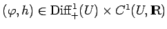 die Menge  (Rekonstruktionsraum), mit 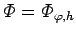 das immersierte und homömorphe Bild von U ist und auf
(Rekonstruktionsraum), mit 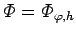 das immersierte und homömorphe Bild von U ist und auf  die Abbildung
die Abbildung  definiert ist. Für das (unbekannte) System 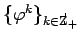 auf U und das System 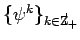 auf
definiert ist. Für das (unbekannte) System 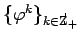 auf U und das System 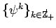 auf  stimmen die topologischen Eigenschaften von korrespondierenden Ruhelagen und periodischen Orbits sowie die Eigenwerte der JACOBI-Matrizen überein. Übereinstimmend sind auch Entropien und Dimensionen, wie z,B, die Korrelationsdimension sowie die LYAPUNOV-Exponenten korrespondierender invarianter Maße. Die Abbildung
stimmen die topologischen Eigenschaften von korrespondierenden Ruhelagen und periodischen Orbits sowie die Eigenwerte der JACOBI-Matrizen überein. Übereinstimmend sind auch Entropien und Dimensionen, wie z,B, die Korrelationsdimension sowie die LYAPUNOV-Exponenten korrespondierender invarianter Maße. Die Abbildung  auf
auf  ist in den Punkten vollständig beschrieben, die durch Zeitreihen erfaßt werden. Zur Demonstration dieses Sachverhaltes sei 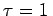.
ist in den Punkten vollständig beschrieben, die durch Zeitreihen erfaßt werden. Zur Demonstration dieses Sachverhaltes sei 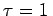.
Ein Punkt 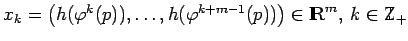 sei gegeben. Offenbar ist 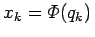, wenn 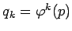 gesetzt wird. Dann gilt 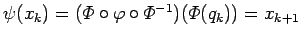, d.h. 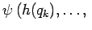 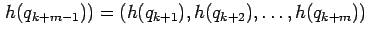. Anstelle der nicht zugänglichen Dynamik von  auf U erhält man also über die Messungen vollständige Orbits (mit 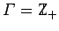) von
auf U erhält man also über die Messungen vollständige Orbits (mit 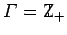) von  auf
auf  und kann daraus Rückschlüsse auf die Dynamik von
und kann daraus Rückschlüsse auf die Dynamik von  ziehen.
ziehen.